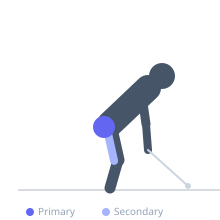
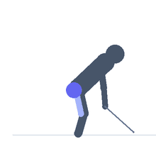

Exercise guide / Cable Kickback
Cable Kickback
The cable kickback is a glute isolation exercise in which an ankle cuff attached to a low cable pulley is used to extend the hip against continuous resistance. Standing on one leg and extending the other hip backward against the cable provides isolated gluteus maximus stimulation through the hip extension range of motion. The cable provides consistent tension throughout the movement, unlike bodyweight hip extension variations.
Primary muscles
gluteus maximus
Secondary muscles
biceps femoris long head
Stabilizers
gluteus medius
tensor fasciae latae
transverse abdominis
Equipment
Cable Machine (Low Pulley)


Starting position
- Attach an ankle cuff to the low pulley of a cable machine. Attach the cuff to one ankle. Face the cable machine, holding the frame for support, with the working leg slightly bent.
Setup
- Set the pulley at the lowest position. Attach the ankle cuff to the working leg. Stand close enough to the machine that the cable is taut at the starting position.
Steps
- Step 1: Face the cable machine, holding the frame with both hands. Stand on the non-working leg with a soft knee.
- Step 2: With the working leg slightly bent, extend the hip backward — kick the leg rearward while contracting the glute.
- Step 3: Extend until the hip is fully extended or the cable limits further range.
- Step 4: Hold the peak contraction briefly with the glute fully squeezed.
- Step 5: Return the leg to the starting position under control. Complete all reps then switch.
Coaching cues
- Squeeze the glute — make the glute do the work
- Don't arch the lower back — the motion comes from the hip
- Control the return — don't let the cable snap the leg forward
Breathing
- Exhale as you extend. Inhale as you return.
Range of motion
- Hip extends from neutral to maximum extension without lumbar hyperextension.
Tempo
- 1-1-2-0
Common mistakes
- Swinging the leg — the movement should be controlled, not momentum-driven
- Hyperextending the lower back to increase the range, compensating for limited glute activation
- Using too much weight, which causes the hip to flex during the movement
Safety
- Keep the core braced to protect the lower back from excessive extension
- Avoid if the cuff irritates the ankle — use an alternative setup
Training
- hypertrophy: 12–20 reps
- endurance: 15–25 reps
- hypertrophy: 3–4 sets
- endurance: 2–3 sets
- Rest: {'hypertrophy': 60, 'endurance': 30}